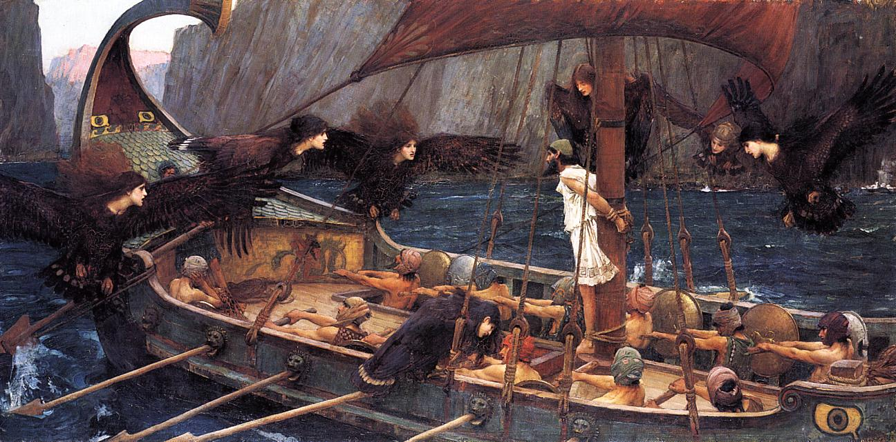
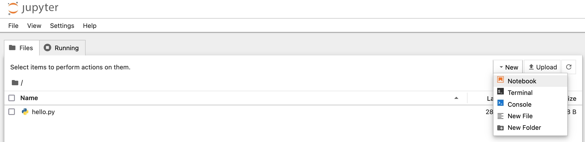
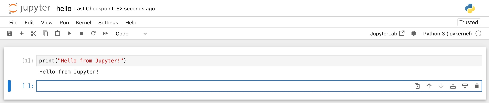
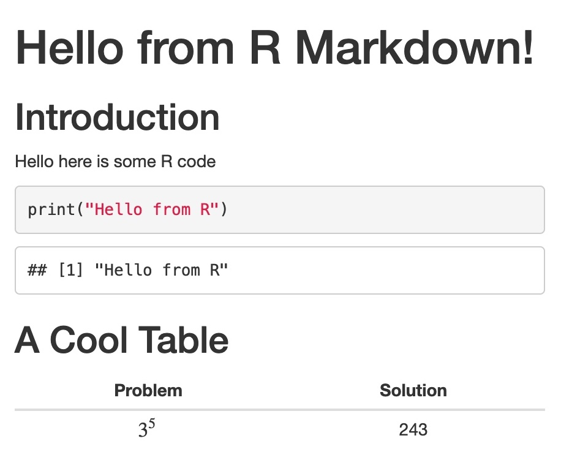
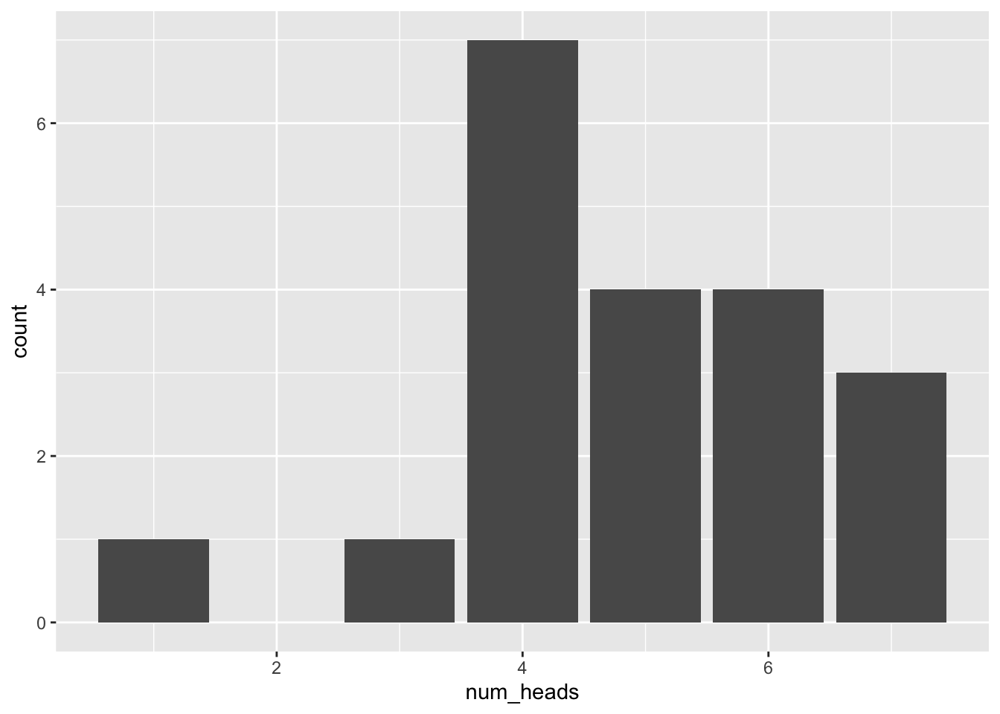
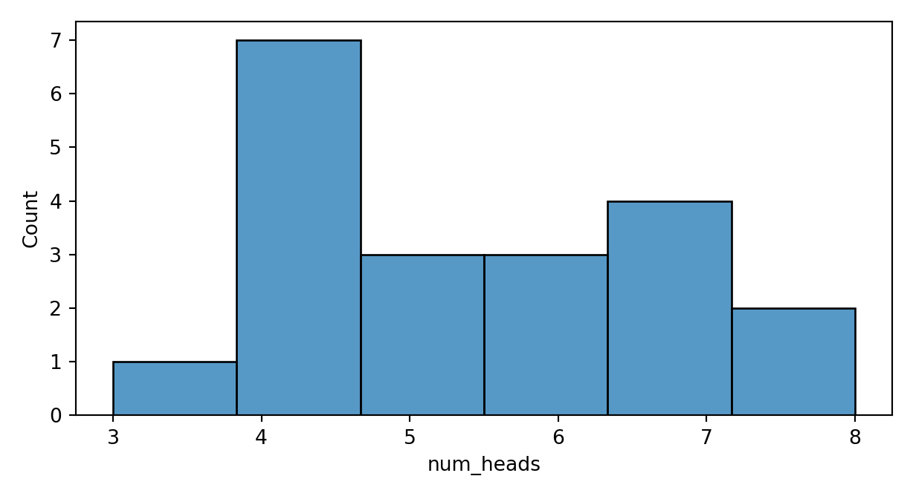

set.seed(1234)
coin_results <- rbinom(n=20, size=10, prob=0.5)
print(coin_results) [1] 3 5 5 6 7 6 1 4 6 5 6 5 4 7 4 7 4 4 4 4class(coin_results)[1] "integer"Week 6, Part 1
Tie yourself to the mast! Please!

| Dive right into coding (Bc you think data science = coding) |
\(\implies\) | Spend 75% of your time wrestling with environment issues 😔 |
| Think about + set up environment before diving into coding | \(\implies\) | Spend 25% of your time wrestling with environment issues 😎 |
.ipynb)python <script>.py Environment! Create a bootcamp-w06 folder, and open this folder in VSCode!
Create a hello.py file, with the following content:
hello.py
print("Hello from Python!")Now open Terminal (in VSCode: Right click in Explorer panel → “Open in Integrated Terminal”) and execute
python hello.pyYou should see the following output:
Hello from Python!jupyter and press Enter…
.ipynb Files)python executable: all it does is
python <temporary file>.py.ipynb file itself
.Rmd)Rscript <script>.rCreate a hello.r file, with the following content:
hello.r
print("Hello from R!")Now open Terminal (in VSCode: Right click in Explorer panel → “Open in Integrated Terminal”) and execute
Rscript hello.rYou should see the following output:
[1] "Hello from R!"(Plz notice the similarity with Python!)
.rmd) Files(Warning: Soon to be obsolete! Replaced by very similar .qmd, Quarto Markdown 😉)
Choose “New Blank File” → “R Markdown…” (in the Files Pane, bottom right of RStudio) to create hello.Rmd:
hello.Rmd
---
title: "Hello from R Markdown!"
---
## Introduction
Hello here is some R code
```{r}
print("Hello from R")
```
## A Cool Table
| Problem | Solution |
|:-:|:-:|
| $3^5$ | 243 |
→

| Python | or | R | ❌😪 |
| Python | AND | R | ✅😎 |
.qmd (Quarto MarkDown) files: Markdown documents containing R and Python code!.Rmd)Rscript <script>.r.ipynb)python <script>.pyNumPy, SciPy, scikit-learnpurrr (for Python-style lambda functions)NumPy in Python)Don’t worry about the details of the code for now! Just note how…
rbinom() is built into R, whereas
set.seed(1234)
coin_results <- rbinom(n=20, size=10, prob=0.5)
print(coin_results) [1] 3 5 5 6 7 6 1 4 6 5 6 5 4 7 4 7 4 4 4 4class(coin_results)[1] "integer"library(tidyverse)── Attaching core tidyverse packages ──────────────────────── tidyverse 2.0.0 ──
✔ dplyr 1.1.2 ✔ readr 2.1.4
✔ forcats 1.0.0 ✔ stringr 1.5.1
✔ ggplot2 3.4.3 ✔ tibble 3.2.1
✔ lubridate 1.9.2 ✔ tidyr 1.3.0
✔ purrr 1.0.2
── Conflicts ────────────────────────────────────────── tidyverse_conflicts() ──
✖ dplyr::filter() masks stats::filter()
✖ dplyr::lag() masks stats::lag()
ℹ Use the conflicted package (<http://conflicted.r-lib.org/>) to force all conflicts to become errorscoin_flip_df <- tibble(num_heads = coin_results)
ggplot(coin_flip_df, aes(x=num_heads)) +
geom_bar()
rng.binomial() requires NumPy
import numpy as np
rng = np.random.default_rng(seed=1234)
ten_coin_results = rng.binomial(n=10, p=0.5, size=20)
print(ten_coin_results)[8 5 7 4 4 3 4 4 8 4 5 5 7 7 6 6 6 4 4 7]type(ten_coin_results)<class 'numpy.ndarray'>import pandas as pd
import matplotlib.pyplot as plt
import seaborn as sns
result_plot = plt.figure()
result_plot.set_figheight(3.5)
coin_flip_df = pd.DataFrame({'num_heads': ten_coin_results})
result_plot = sns.histplot(data=coin_flip_df, x='num_heads')/Users/jpj/.virtualenvs/r-reticulate/lib/python3.11/site-packages/seaborn/_oldcore.py:1119: FutureWarning: use_inf_as_na option is deprecated and will be removed in a future version. Convert inf values to NaN before operating instead.
with pd.option_context('mode.use_inf_as_na', True):plt.tight_layout()
plt.show()
How did I include both R and Python code (and its outputs) in the previous slide?
Quarto allows integration of R+Python via code blocks!
my_file.qmd
```{python}
print("Hello from Python!")
```
```{r}
print("Hello from R!")
```→
Hello from Python!
Hello from R!This also holds for Base R to Tidyverse!